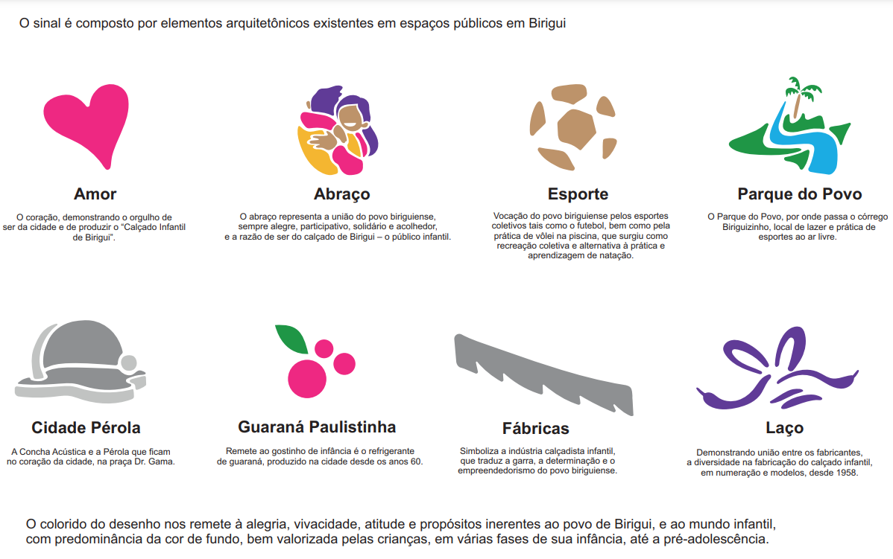

.png)
Indicação Geográfica (IG)?
O que é?
A Indicação Geográfica constitui um processo, como o próprio nome diz, de identificar um produto ou serviço de determinado território.
No Brasil, as Indicações Geográficas são divididas em duas modalidades:
Mapa de Birigui Abaixo
Processo de Reconhecimento
Pontos importantes
1. Consulte as marcas já registradas
2. Defina o setor da sua marca
3. Conheça e defina a apresentação da sua marca
4. Defina a natureza da sua marca
5. Veja quais são as taxas
6. Acompanhamento
7. Exame formal
8. Prazo para oposições
9. Deferimento
Apresentação da marca
| Nominativa | Figurativo | Mista | Tridimensional |
| É constituída por uma ou mais palavras, no sentido amplo do alfabeto romano, compreendendo também os neologismos e as combinações de letras ou algarismos romanos e/ou arábicos. | A proteção legal abrange desenhos, imagens, figuras, letras, números e ideogramas de línguas como japonês, chinês e hebraico. No caso dos ideogramas, a proteção é aplicada ao símbolo em si, não à palavra ou termo que ele representa, a menos que seja uma marca mista. | É constituída pela combinação de elementos nominativos e de elementos figurativos, ou de elementos nominativos cuja grafia apresente-se de forma estilizada. | A forma plástica de um produto ou embalagem é protegida legalmente se possuir uma configuração física distintiva, independente de qualquer efeito técnico. |
Vantagens
| Vantagens Sociais | Vantagens Ambientais | Vantagens Econômicas |
| Relação de confiança entre consumidores e produtores | Preservação da biodiversidade | Diferenciação da produção |
| Desenvolvimento territorial | Manutenção das características ambientais da região que diferenciam a produção | Reconhecimento do produto |
Composição do selo

| Amor | Abraço | Esporte | Parque do Povo | Cidade Pérola | Guaraná Paulistinha | Fábricas | Laço |
| O coração, demonstrando o orgulho de ser da cidade e de produzir o “Calçado Infantil de Birigui”. | O abraço representa a união do povo biriguiense, sempre alegre, participativo, solidário e acolhedor, e a razão de ser do calçado de Birigui – o público infantil | Vocação do povo biriguiense pelos esportes coletivos tais como o futebol, bem como pela prática de vôlei na piscina, que surgiu como recreação coletiva e alternativa à prática e aprendizagem de natação. | O Parque do Povo, por onde passa o córrego Biriguizinho, local de lazer e prática de esportes ao ar livre. | A Concha Acústica e a Pérola que ficam no coração da cidade, na praça Dr. Gama | Remete ao gostinho de infância é o refrigerante de guaraná, produzido na cidade desde os anos 60 | Simboliza a indústria calçadista infantil, que traduz a garra, a determinação e o empreendedorismo do povo biriguiense. | Demonstrando união entre os fabricantes, a diversidade na fabricação do calçado infantil, em numeração e modelos, desde 1958. |